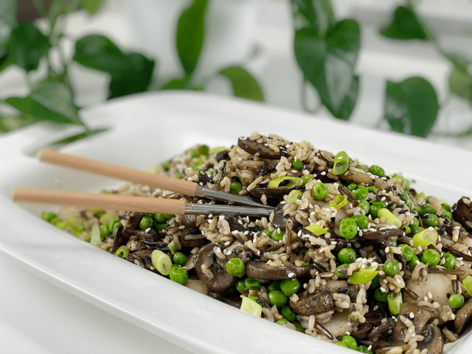
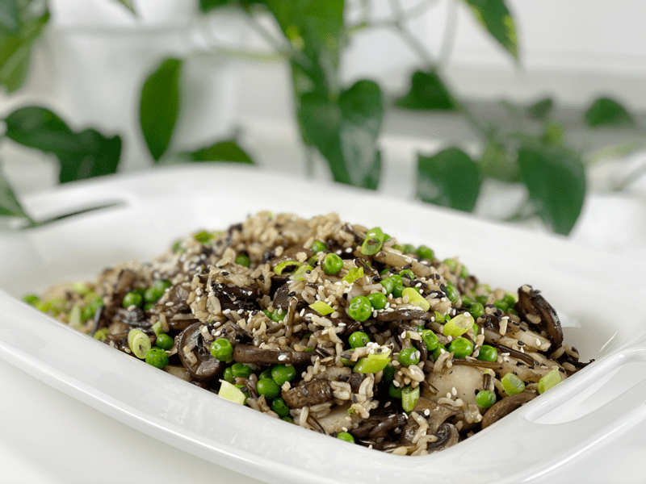
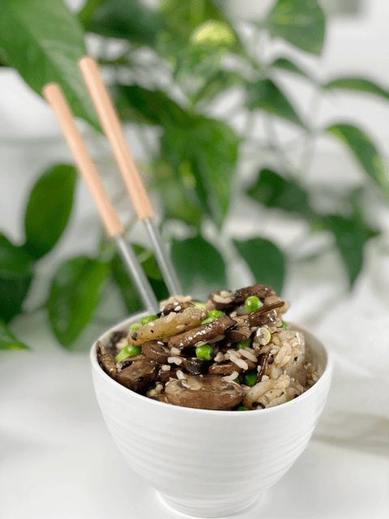
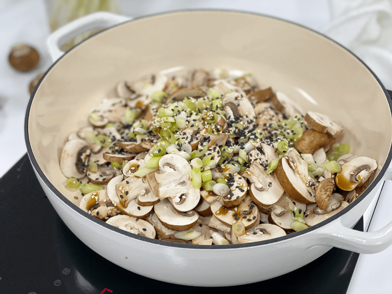
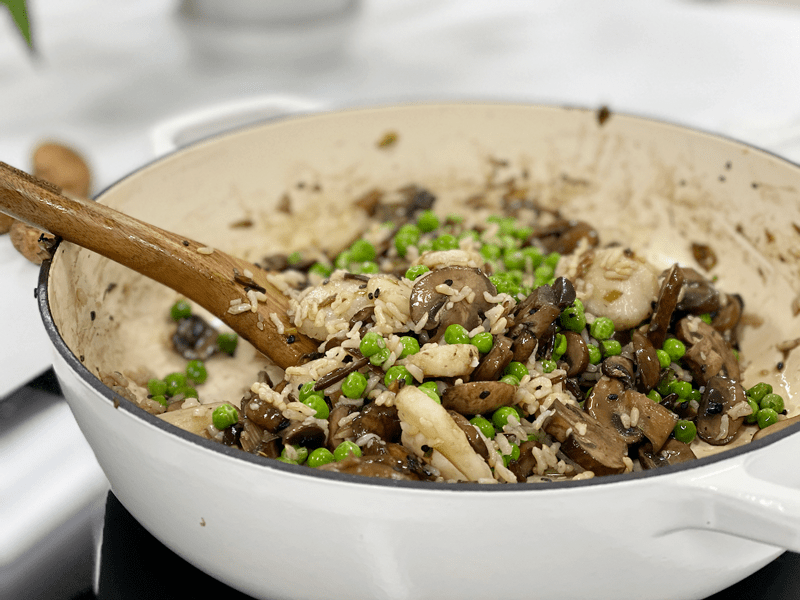
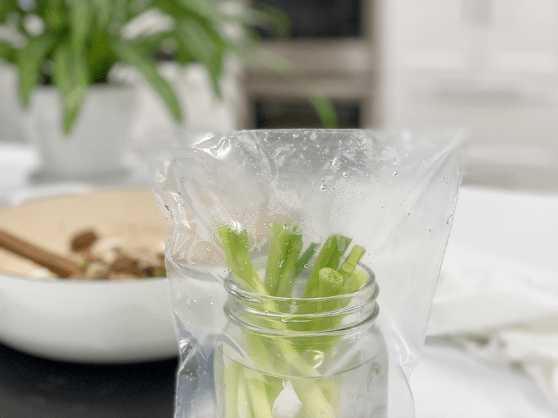

Asian Mushroom and Wild Rice Dish | Oil-Free
What is there that I don’t love about this dish? Nothing. Bob and I both ate a good portion for dinner, leaving the table feeling very satisfied. Each bite was an experience. The mushrooms added a uniquely savory flavor known as umami, and a dense, meaty texture when once cooked. The wild rice added a tender, chewy texture that accentuated the slightly sweet crunch of the water chestnuts. It was truly a mouth explosion of texture.

When I got up this morning, the sun was shining, the sky was a brilliant blue color with stark white pillowy clouds passing us by like a slow-moving barge. I told Bob that we should eat outside today and take advantage of the weather. I don’t know about you, but for us, this home quarantine has really shined a light on not taking anything for granted…for starters, the sunshine. With our breakfast in hand, we stepped outside on the deck, turned around, and sat at the table (staring outside). Brrrr. The weather was undeserving. “Lunchtime! We will eat out there at lunchtime.”
Lunch rolled around, we dished up our plates, I grabbed a blanket, stepped on the deck and turned right back around and sat at the table. “Well, shoot fire, it’s colder than gee willikers out there!” Let’s wait till dinner, then it will surely be warm enough. Yeah, well, it didn’t warm up and we ate inside yet again. Regardless of where we sat, the food remained delicious, nutritious, and comforted our souls. Enough rambling. Let’s go over a few basics before you dive into this recipe.
Ingredient Run-Down
Mushrooms
- I used my all-time favorite, fresh organic cremini mushrooms. They are small to medium in size and have a rounded cap with a short, stubby stem. The smooth cap ranges from light to dark brown and is firm and spongy. The short white stem is also edible, so I diced them up as well–no waste. They are mild and somewhat earthy, with a meaty texture.
- If you don’t like to eat the mushroom stalks, pop them off and save for making soup stock.
Green Onions
- Greens onions are also known as spring onions, scallions, or salad onions. Green onions are actually baby, immature onions that are picked before they fully grow. The bulb is younger and is cut while the tops are still green.
- If you don’t have any green onions on hand, you can use regular white or yellow onions. Since green onions are more mellow and mild in flavor, regular onions will be more pungent.
Coconut Aminos
- Coconut aminos is a soy sauce replacement. There are many types of soy sauce on the market, so feel free to use whichever one fits into your diet. I prefer coconut aminos since it is gluten and soy-free.
- The brown liquid has a deep, savory flavor that’s a lot like soy sauce, but with a touch of sweetness and less salt. (A teaspoon of coconut aminos contains about 90mg sodium, while a teaspoon of soy sauce contains about 307mg sodium).
- It has no discernible coconut taste as it enhances and deepens the flavors of the other ingredients in a dish.
Water Chestnuts
- Despite the name, they are not nuts. They are aquatic tuber vegetables that grow in marshes, ponds, paddy fields, and shallow lakes.
- I love including them in some of my dishes because of their fresh, crispy, sweet, apple-like flesh. They will stay crisp even after cooking.
- I have yet to find them fresh in the produce section, so if you are new to trying them, look for organic sliced water chestnuts in the canned section of the store.

Kids’ Corner
Here’s a fun activity for your kids to do. Place the green onions in a jar and fill it with an inch or two of water, just enough to cover the roots. Then set the jar on the windowsill in your kitchen. The onions will not only stay fresh but also will continue to grow. Change the water every couple of days, as needed. You can also store them in the fridge this way if your house is too warm. Nothing like witnessing how your food grows right before your eyes!
It’s my hope that you will try this recipe and enjoy it as much as we did. Please leave a comment below and have a blessed day, amie sue

Ingredients
Yields 5 cups
- 5 cups sliced cremini mushrooms
- 1/4 cup diced green onions (save the green stems)
- 2 Tbsp coconut aminos
- 1 tsp white sesame seeds
- 1 tsp black sesame seeds
- 1/2 tsp sea salt
Add-ins
- 1 cup organic peas
- 1 cup cooked wild rice blend
- 1/2 cup organic sliced water chestnuts
- 1/4 cup diced fresh chives (green onions)
Preparation
- Clean the mushrooms, removing any soil and grit. If necessary, trim the ends of the stalks
- Place a large frying pan over medium heat, add the sliced mushrooms and diced onions. Cook until the mushrooms turn darker brown (not burnt but brown).
- Mushrooms contain a lot of moisture, so you don’t need any water to do the typical water sauté. It might fool you at first, but just keep stirring it around, and soon you will start to see the liquid release.
- I cooked mine until almost all the water released cooked back up, which took nearly 10 minutes. Don’t let them dry out.
- Once the mushrooms and onion have fully cooked down, add the coconut aminos, white & black sesame seeds, salt. Give it a good stir.
- Add in the peas, cooked rice, water chestnuts, and fresh green onion tops (chives).
- Cook another 5-10 minutes, just until the add-ins are warm through.
- Enjoy right away or store in the fridge for 3 days.
-

-
Cook slow and love.
-

-
Cook until the mushrooms have a nice toothsome texture.
-

-
Green onion storage tip–place the rooted end in water, cover with plastic, and pop in the fridge. Change the water every couple of days. The greens will grow new tops!
© AmieSue.com